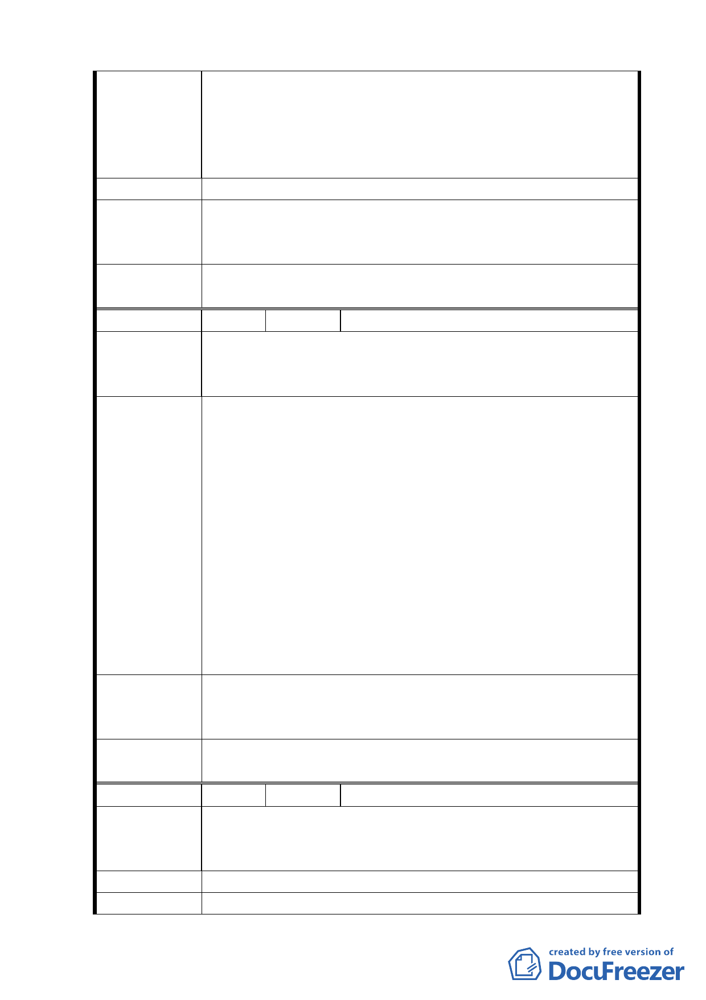

本校：查本府八十年四月三十日公告之「變更臺北市私
立各級學校用地（通盤檢討）案」內畸零地等共同處理
原則：（略），都發局同意併老泉里通盤檢討辦理，學校
也承諾支付部份建設經費，絕非說明會之 6：4 比例徵
收。
建 議 辦 法 請免予實施區段徵收或酌情減低比例徵收，以利學校發展。
專案小組
審查結論
所提建議係保護區變更為學校用地部份，應依「土地徵收條
例」及地政處研擬之「臺北市區段徵收申請原位置保留分配
土地實施辦法」等規定辦理。
委員會決
議
同專案小組審查結論。
編 號 １１ 陳情人 臺北市私立東山高級中學
一、土地標示：文山區老泉段四小段四七九地號。
陳 情 理 由 二、本地號面積 1864 ㎡坡度超過 55％以上，依法禁止（保
留）開發，雖納入學校用地，但無利用建設價值。
一、依市政府八十六年六月四日公告之「修定暨變更臺北市
私立各級學校用地通盤檢討（原國家公園、農業區、保
護區部分之學校）案」考量各私立學校位於保護區內之
開發行為易衍生水土保持問題，故案中規定「原計畫範
圍內部分土地，經劃定坡度超過三十％須維持原有地貌
建議辦法
者，其建蔽率為０％，容積率為三十％，其容積可調整
分配計入校地範圍內坡度三十％以下之土地併同計
算，惟坡度超過四十％之校地，其容積率為０％。且爾
後都市計畫變更案，除開發區內原自然地形平均坡度超
過三十％地區，不得作為建築使用外，如有坡度超過五
十五％之地區，不應再納入計畫範圍內。」。
二、仍請保留四七九地號納入學校用地，以避免校地遭分
割。（惟學校依法不得開發利用）
專案小組
審查結論
委員會決
議
一、同意發展局研議，為確保東山高中之山坡地保育，擬將東山高中
依劃設原則劃設「山限區」。
二、坡度陡峭部分，地政處於評定地價時將予以考量。
同專案小組審查結論。
編 號 １２ 陳情人 高泉合等二人
一、土地標示：文山區老泉段四小段二七 0、三三六、三四二、三四
陳情理由
四地號。
二、我想參與每次大小會議請通知。
建 議 辦 法 （空白）
專 案 小 組 依一般程序通知陳情人列席旁聽。
一二